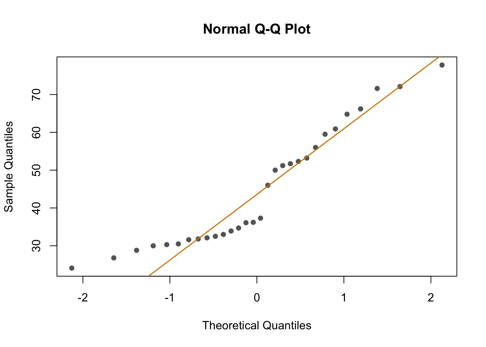

ELISA_models
Paloma
2024-10-23
Last updated: 2025-04-01
Checks: 6 1
Knit directory:
HairCort-Evaluation-Nist2020/
This reproducible R Markdown analysis was created with workflowr (version 1.7.1). The Checks tab describes the reproducibility checks that were applied when the results were created. The Past versions tab lists the development history.
The R Markdown file has unstaged changes. To know which version of
the R Markdown file created these results, you’ll want to first commit
it to the Git repo. If you’re still working on the analysis, you can
ignore this warning. When you’re finished, you can run
wflow_publish to commit the R Markdown file and build the
HTML.
Great job! The global environment was empty. Objects defined in the global environment can affect the analysis in your R Markdown file in unknown ways. For reproduciblity it’s best to always run the code in an empty environment.
The command set.seed(20241016) was run prior to running
the code in the R Markdown file. Setting a seed ensures that any results
that rely on randomness, e.g. subsampling or permutations, are
reproducible.
Great job! Recording the operating system, R version, and package versions is critical for reproducibility.
Nice! There were no cached chunks for this analysis, so you can be confident that you successfully produced the results during this run.
Great job! Using relative paths to the files within your workflowr project makes it easier to run your code on other machines.
Great! You are using Git for version control. Tracking code development and connecting the code version to the results is critical for reproducibility.
The results in this page were generated with repository version e97ccaf. See the Past versions tab to see a history of the changes made to the R Markdown and HTML files.
Note that you need to be careful to ensure that all relevant files for
the analysis have been committed to Git prior to generating the results
(you can use wflow_publish or
wflow_git_commit). workflowr only checks the R Markdown
file, but you know if there are other scripts or data files that it
depends on. Below is the status of the Git repository when the results
were generated:
Ignored files:
Ignored: .DS_Store
Ignored: .RData
Ignored: .Rhistory
Ignored: analysis/.DS_Store
Ignored: analysis/.Rhistory
Ignored: data/.DS_Store
Ignored: data/Test3/.DS_Store
Ignored: data/Test4/.DS_Store
Unstaged changes:
Modified: analysis/ELISA_Analysis_RawVals_Models_test3.Rmd
Note that any generated files, e.g. HTML, png, CSS, etc., are not included in this status report because it is ok for generated content to have uncommitted changes.
These are the previous versions of the repository in which changes were
made to the R Markdown
(analysis/ELISA_Analysis_RawVals_Models_test3.Rmd) and HTML
(docs/ELISA_Analysis_RawVals_Models_test3.html) files. If
you’ve configured a remote Git repository (see
?wflow_git_remote), click on the hyperlinks in the table
below to view the files as they were in that past version.
| File | Version | Author | Date | Message |
|---|---|---|---|---|
| Rmd | e97ccaf | Paloma | 2025-04-01 | test4-clean |
| Rmd | 87248a1 | Paloma | 2025-04-01 | upd |
Intro
To explore the effects of each variable more systematically, I run multiple models and compared them using AIC Akakikes’ coefficient. I removed samples with a binding over 80% or under 20%.
Overview of Model Types: Introduce each model with a summary of its purpose. Model Fitting and Diagnostics: Clearly separate code for each model and add explanations. Model Comparison: Summarize key findings from model diagnostics.

This is the distribution of the data (binding percentage). I am not sure how to describe it, but it does not look very linear. I will test different distributions at another time, but for now, I will run and compare simple models that should allow me to understand which variables have a greater impact on binding percentages.
Linear models: Description
| Spike | Buffer | Weight | Obs | |
|---|---|---|---|---|
| | m1 | | X | |||
| | m2 | | X | |||
| | m3 | | X | |||
| | m4 | | X | X | ||
| | m5 | | X | X | ||
| | m6 | | X | X | ||
| | m7 | | X | X | X | |
| | m8 | | X | X | Spiked samples only | |
| | m9 | | X | X | Not spiked samples only | |
Creating models
binding <- data$Binding.Perc
weight <- data$Weight_mg
spike <- data$Spike
buffer <- data$Buffer_nl
# model 1
m1 <- lm(binding ~ weight)
confint(m1, level = 0.95) 2.5 % 97.5 %
(Intercept) 32.734311 70.6134504
weight -1.057979 0.4711297# model 2
m2 <- lm(binding ~ spike)
confint(m2, level = 0.95) 2.5 % 97.5 %
(Intercept) 49.08898 59.28880
spike1 -31.61922 -15.49189# model 3
m3 <- lm(binding ~ buffer)
confint(m3, level = 0.95) 2.5 % 97.5 %
(Intercept) 31.784638 49.38459
buffer1 -4.309996 19.07018# model 4
m4 <- lm(binding ~ weight + spike)
confint(m4, level = 0.95) 2.5 % 97.5 %
(Intercept) 64.866499 88.3764142
weight -1.307243 -0.4453015
spike1 -34.855427 -21.2812872# model 5
m5 <- lm(binding ~ weight + buffer)
confint(m5, level = 0.95) 2.5 % 97.5 %
(Intercept) 30.459445 68.1867374
weight -1.164810 0.3642451
buffer1 -3.315599 20.4905160# model 6
m6 <- lm(binding ~ spike + buffer)
confint(m6, level = 0.95) 2.5 % 97.5 %
(Intercept) 43.3835259 56.07685
spike1 -31.3568589 -16.20012
buffer1 0.5335106 15.51781# model 7
m7 <- lm(binding ~ weight + buffer + spike)
confint(m7, level = 0.95) 2.5 % 97.5 %
(Intercept) 65.804710 83.3124949
weight -1.368173 -0.7142862
buffer1 6.502196 16.1265526
spike1 -34.285345 -24.1790066# model 8
sp1 <- data[data$Spike == 1,]
sp0 <- data[data$Spike == 0,]
binding <- sp1$Binding.Perc
weight <- sp1$Weight_mg
spike <- sp1$Spike
buffer <- sp1$Buffer_nl
m8 <- lm(binding ~ buffer + weight)
confint(m8, level = 0.95) 2.5 % 97.5 %
(Intercept) 32.2245763 41.8013488
buffer1 -0.4660705 5.2006784
weight -0.6129155 -0.1460631# model 9
binding <- sp0$Binding.Perc
weight <- sp0$Weight_mg
spike <- sp0$Spike
buffer <- sp0$Buffer_nl
m9 <- lm(binding ~ buffer + weight)
confint(m9, level = 0.95) 2.5 % 97.5 %
(Intercept) 67.612787 87.4714725
buffer1 10.383174 22.4241841
weight -1.640081 -0.8963561QQ plots
model <- list(m1, m2, m3, m4, m5, m6, m7, m8, m9)
par(mfrow = c(3, 3))
for (i in 1:length(model)) {
# Create a Q-Q plot for the residuals of the i-th model
qqnorm(residuals(model[[i]]), main = paste("Q-Q Plot, m", i, sep = ""))
qqline(residuals(model[[i]]), col = "red")
}
Plot residuals vs fitted by model
par(mfrow = c(3, 3))
plot(m1, which = 1)
plot(m2, which = 1, main = "m2")
plot(m3, which = 1, main = "m3")
plot(m4, which = 1, main = "m4")
plot(m5, which = 1, main = "m5")
plot(m6, which = 1, main = "m6")
plot(m7, which = 1, main = "m7")
plot(m8, which = 1, main = "m8")
plot(m9, which = 1, main = "m9")
Comparing models
(Akakike’s information criteria)
# computing bias-adjusted version of AIC (AICc) Akakaike's information criteria table
AICc_compare <-AICtab(m1, m2, m3, m4, m5, m6, m7, m8, m9,
base = TRUE,
weights = TRUE,
logLik = TRUE,
#indicate number of observations
nobs = 30)
kable(AICc_compare)| logLik | AIC | dLogLik | dAIC | df | weight | |
|---|---|---|---|---|---|---|
| m8 | -23.94220 | 55.8844 | 100.3385734 | 0.00000 | 4 | 1 |
| m9 | -55.69788 | 119.3958 | 68.5828959 | 63.51136 | 4 | 0 |
| m7 | -95.17615 | 200.3523 | 29.1046184 | 144.46791 | 5 | 0 |
| m4 | -104.79103 | 217.5821 | 19.4897423 | 161.69766 | 4 | 0 |
| m6 | -109.78461 | 227.5692 | 14.4961574 | 171.68483 | 4 | 0 |
| m2 | -112.25364 | 230.5073 | 12.0271289 | 174.62289 | 3 | 0 |
| m3 | -123.73810 | 253.4762 | 0.5426679 | 197.59181 | 3 | 0 |
| m5 | -123.11028 | 254.2206 | 1.1704906 | 198.33617 | 4 | 0 |
| m1 | -124.28077 | 254.5615 | 0.0000000 | 198.67715 | 3 | 0 |
Model 7 has the highest weight, a measure of certainty in the model. However, we need to consider that the distribution of the data is not normal. Perhaps I should try using other distributions (binom, posson, )
R values and std error
kable(sum_models[order(sum_models$r_values, decreasing = TRUE), ]) | r_values | info | res_std_error | |
|---|---|---|---|
| m7 | 0.8432246 | spike + buffer + weight | 6.203728 |
| m9 | 0.8076695 | buffer + weight, NOT spiked only | 5.850626 |
| m4 | 0.7134063 | weight + spike | 8.387781 |
| m6 | 0.6001972 | spike + buffer | 9.906874 |
| m2 | 0.5454965 | spike | 10.562881 |
| m8 | 0.5287000 | buffer + weight, spiked only | 2.054609 |
| m5 | 0.0280065 | weight + buffer | 15.447046 |
| m3 | 0.0226583 | buffer | 15.489485 |
| m1 | -0.0133472 | weight | 15.772222 |
Plot regression coefs
Plot model 1 to 4
ggplot(coef_df, aes(x = term,
y = estimate,
color = model)) +
geom_point(position = position_dodge(width = 4)) +
geom_errorbar(aes(ymin = estimate - 1.96 * std.error,
ymax = estimate + 1.96 * std.error),
position = position_dodge(width = 0.85), width = 1) +
theme_minimal() +
coord_flip() + # Flip the coordinates for better readability
facet_wrap(~ model, ncol = 1) + # One model per line
labs(title = "Coefficient Plot for Models 1-4",
x = "Terms",
y = "Estimates") +
theme(legend.position = "none") +
geom_hline(yintercept = 0, color = "gray",
linetype = "dashed") + # Gray line at zero
expand_limits(y = c(-58, 58)) +
theme(
axis.text.x = element_text(size = 12), # X-axis text size
axis.text.y = element_text(size = 12), # Y-axis text size
axis.title.x = element_text(size = 14), # X-axis title size
axis.title.y = element_text(size = 14), # Y-axis title size
plot.title = element_text(size = 16, hjust = 0.5),
strip.text = element_text(size = 14) # Facet label text size
)
Plot model 5 to 9
# Combine the data frames for plotting
#coef_df <- rbind(coef_df5, coef_df6, coef_df7, coef_df8,coef_df9)
coef_df <- rbind(coef_df7, coef_df8, coef_df9)
ggplot(coef_df, aes(x = term,
y = estimate,
color = term)) +
geom_point(position = position_dodge(width = 3)) +
geom_errorbar(aes(ymin = estimate - 1.96 * std.error,
ymax = estimate + 1.96 * std.error),
position = position_dodge(width = 0.9), width = 0.85) +
theme_minimal() +
coord_flip() + # Flip the coordinates for better readability
facet_wrap(~ model, ncol = 1) + # One model per line
labs(title = "Coefficient Plots",
x = "Terms",
y = "Estimates") +
theme(legend.position = "none") +
geom_hline(yintercept = 0, color = "gray",
linetype = "dashed") + # Gray line at zero
# expand_limits(y = c(-50, 50)) +
theme(
axis.text.x = element_text(size = 12), # X-axis text size
axis.text.y = element_text(size = 12), # Y-axis text size
axis.title.x = element_text(size = 14), # X-axis title size
axis.title.y = element_text(size = 14), # Y-axis title size
plot.title = element_text(size = 16, hjust = 0.5),
strip.text = element_text(size = 14)
)
Additional info (coefficient table)
# Coef table
coeftab(m1, m2, m3, m4, m5, m6, m7, m8, m9) -> coeftabs
kable(coeftabs)| (Intercept) | weight | spike1 | buffer1 | |
|---|---|---|---|---|
| m1 | 51.67388 | -0.2934245 | NA | NA |
| m2 | 54.18889 | NA | -23.55556 | NA |
| m3 | 40.58462 | NA | NA | 7.380090 |
| m4 | 76.62146 | -0.8762722 | -28.06836 | NA |
| m5 | 49.32309 | -0.4002825 | NA | 8.587459 |
| m6 | 49.73019 | NA | -23.77849 | 8.025660 |
| m7 | 74.55860 | -1.0412296 | -29.23218 | 11.314374 |
| m8 | 37.01296 | -0.3794893 | NA | 2.367304 |
| m9 | 77.54213 | -1.2682186 | NA | 16.403679 |
Optimal parameters using model 7
The goal is to run essays that result in a 50% binding. Here I can find the weight that gives 50% binding when spike is 0
# choose one model (m7: buffer + weight + spike)
coef <- coef(m7)
# Set target binding
target_binding <- 50
# FUNCTION to Solve for weight, assuming spike = 0
# 50% - intercept - (buffer1 * 1) - (spike * 0) / weight
solve_for_weight <- function(dilution_value, spike_value = 0) {
(target_binding - coef[1] - coef[3] * dilution_value - coef[4] * spike_value) / coef[2]
}
# Find the weight that gives 50% binding when spike is 0
# dilution = 250
optimal_weight <- solve_for_weight(dilution_value = 1)
optimal_weight(Intercept)
34.45251 # dilution = 60
optimal_weight <- solve_for_weight(dilution_value = 0)
optimal_weight(Intercept)
23.58616 # Find the weight that gives 50% binding when spike is 1
# dilution = 250
optimal_weight <- solve_for_weight(dilution_value = 1, spike_value = 1)
optimal_weight(Intercept)
6.377845 # dilution = 60
optimal_weight <- solve_for_weight(dilution_value = 0, spike_value = 1)
optimal_weight(Intercept)
-4.488514 Visualize estimated optimal parameters
# FUNCTION to Solve for weight, assuming spike = 0
# 50% - intercept - (buffer1 * 1) - (spike * 0) / weight
solve_for_weight <- function(dilution_value, spike_value = 0) {
(target_binding - coef[1] - coef[3] * dilution_value - coef[4] * spike_value) / coef[2]
}
# Loop over different dilution values to find the optimal weight for 50% binding
# here, dilution 0 means 60uL, and 1 is 250 uL
for (buffer in seq(0, 1, by = 0.1)) {
optimal_weight <- solve_for_weight(buffer)
cat("Dilution:", buffer, "-> Optimal Weight for 50% Binding:", optimal_weight, "\n")
}Dilution: 0 -> Optimal Weight for 50% Binding: 23.58616
Dilution: 0.1 -> Optimal Weight for 50% Binding: 24.67279
Dilution: 0.2 -> Optimal Weight for 50% Binding: 25.75943
Dilution: 0.3 -> Optimal Weight for 50% Binding: 26.84606
Dilution: 0.4 -> Optimal Weight for 50% Binding: 27.9327
Dilution: 0.5 -> Optimal Weight for 50% Binding: 29.01933
Dilution: 0.6 -> Optimal Weight for 50% Binding: 30.10597
Dilution: 0.7 -> Optimal Weight for 50% Binding: 31.19261
Dilution: 0.8 -> Optimal Weight for 50% Binding: 32.27924
Dilution: 0.9 -> Optimal Weight for 50% Binding: 33.36588
Dilution: 1 -> Optimal Weight for 50% Binding: 34.45251 # visualize results
## Buffer = 1, Spike = 0
new_data.b1.s0 <- expand.grid(weight = seq(min(weight), max(weight),
length.out = 100),
buffer = as.factor(1),
spike = as.factor(0))
# Predict the binding percentage for the new data
new_data.b1.s0$predicted_binding <- predict(m7,
newdata = new_data.b1.s0)
## Buffer = 1, Spike = 1
new_data.b1.s1 <- expand.grid(weight = seq(min(weight), max(weight),
length.out = 100),
buffer = as.factor(1),
spike = as.factor(1))
# Predict the binding percentage for the new data
new_data.b1.s1$predicted_binding <- predict(m7,
newdata = new_data.b1.s1)
## Buffer = 0, Spike = 1
new_data.b0.s1 <- expand.grid(weight = seq(min(weight),
max(weight), length.out = 100),
buffer = as.factor(0), spike = as.factor(1))
# Predict the binding percentage for the new data
new_data.b0.s1$predicted_binding <- predict(m7,
newdata = new_data.b0.s1)
## Buffer = 0, Spike = 0
new_data.b0.s0 <- expand.grid(weight = seq(min(weight), max(weight), length.out = 100),
buffer = as.factor(0), spike = as.factor(0)) # Set buffer and spike to a fixed value for simplicity
# Predict the binding percentage for the new data
new_data.b0.s0$predicted_binding <- predict(m7,
newdata = new_data.b0.s0)
new_data <- rbind(new_data.b0.s0, new_data.b0.s1, new_data.b1.s0, new_data.b1.s1)
# Plot the predicted binding percentage against weight
ggplot(new_data, aes(x = weight,
y = predicted_binding)) +
geom_line() +
geom_hline(yintercept = 50, linetype = "dashed", color = "red") +
labs(x = "Weight",
y = "Predicted Binding Percentage") +
facet_grid(buffer ~ spike,
labeller = labeller(
buffer = c("0" = "60 uL buffer",
"1" = "250 uL buffer"),
spike = c("0" = "No Spike",
"1" = "Spiked")))
# Plot the predicted binding percentage against weight
ggplot(new_data.b1.s1, aes(x = weight,
y = predicted_binding)) +
geom_line(color = "gold3") +
geom_hline(yintercept = 50,
linetype = "dashed",
color = "red") + # Highlight 50% binding
labs(title = "Predicted Binding Percentage vs Weight
(dilution = 250, spike = 1)",
x = "Weight",
y = "Predicted Binding Percentage")+
theme_minimal()
# Plot the predicted binding percentage against weight
ggplot(new_data.b0.s1, aes(x = weight,
y = predicted_binding)) +
geom_line(color = "gold3") +
geom_hline(yintercept = 50,
linetype = "dashed",
color = "red") + # Highlight 50% binding
labs(title = "Predicted Binding Percentage vs Weight (dilution = 250, spike = 0)",
x = "Weight",
y = "Predicted Binding Percentage") +
theme_minimal()
# Plot the predicted binding percentage against weight
ggplot(new_data.b0.s0, aes(x = weight,
y = predicted_binding)) +
geom_line(color = "gold3") +
geom_hline(yintercept = 50,
linetype = "dashed",
color = "red") + # Highlight 50% binding
labs(title = "Predicted Binding Percentage vs Weight (dilution = 60, spike = 0)",
x = "Weight",
y = "Predicted Binding Percentage") +
theme_minimal()
sessionInfo()R version 4.4.3 (2025-02-28)
Platform: aarch64-apple-darwin20
Running under: macOS Sequoia 15.3.2
Matrix products: default
BLAS: /Library/Frameworks/R.framework/Versions/4.4-arm64/Resources/lib/libRblas.0.dylib
LAPACK: /Library/Frameworks/R.framework/Versions/4.4-arm64/Resources/lib/libRlapack.dylib; LAPACK version 3.12.0
locale:
[1] en_US.UTF-8/en_US.UTF-8/en_US.UTF-8/C/en_US.UTF-8/en_US.UTF-8
time zone: America/Detroit
tzcode source: internal
attached base packages:
[1] stats4 stats graphics grDevices utils datasets methods
[8] base
other attached packages:
[1] bbmle_1.0.25.1 arm_1.14-4 lme4_1.1-36 Matrix_1.7-2
[5] MASS_7.3-64 coefplot_1.2.8 RColorBrewer_1.1-3 ggplot2_3.5.1
[9] knitr_1.49 dplyr_1.1.4
loaded via a namespace (and not attached):
[1] gtable_0.3.6 xfun_0.49 bslib_0.8.0
[4] lattice_0.22-6 numDeriv_2016.8-1.1 vctrs_0.6.5
[7] tools_4.4.3 Rdpack_2.6.2 generics_0.1.3
[10] tibble_3.2.1 fansi_1.0.6 pkgconfig_2.0.3
[13] lifecycle_1.0.4 farver_2.1.2 compiler_4.4.3
[16] stringr_1.5.1 git2r_0.35.0 munsell_0.5.1
[19] httpuv_1.6.15 htmltools_0.5.8.1 sass_0.4.9
[22] yaml_2.3.10 later_1.3.2 pillar_1.9.0
[25] nloptr_2.1.1 jquerylib_0.1.4 whisker_0.4.1
[28] cachem_1.1.0 reformulas_0.4.0 boot_1.3-31
[31] abind_1.4-8 useful_1.2.6.1 nlme_3.1-167
[34] bdsmatrix_1.3-7 tidyselect_1.2.1 digest_0.6.37
[37] mvtnorm_1.3-2 stringi_1.8.4 reshape2_1.4.4
[40] labeling_0.4.3 splines_4.4.3 rprojroot_2.0.4
[43] fastmap_1.2.0 grid_4.4.3 colorspace_2.1-1
[46] cli_3.6.3 magrittr_2.0.3 utf8_1.2.4
[49] withr_3.0.2 scales_1.3.0 promises_1.3.0
[52] rmarkdown_2.29 workflowr_1.7.1 coda_0.19-4.1
[55] evaluate_1.0.1 rbibutils_2.3 rlang_1.1.4
[58] Rcpp_1.0.13-1 glue_1.8.0 rstudioapi_0.17.1
[61] minqa_1.2.8 jsonlite_1.8.9 R6_2.5.1
[64] plyr_1.8.9 fs_1.6.5